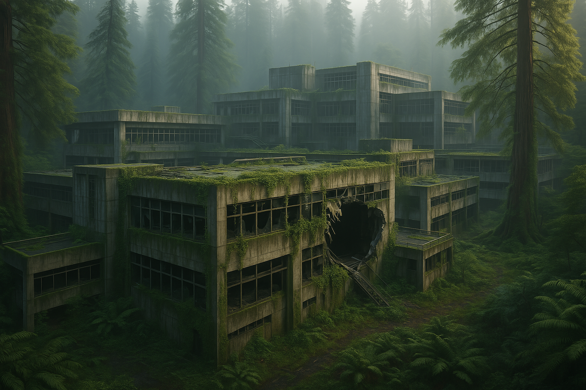
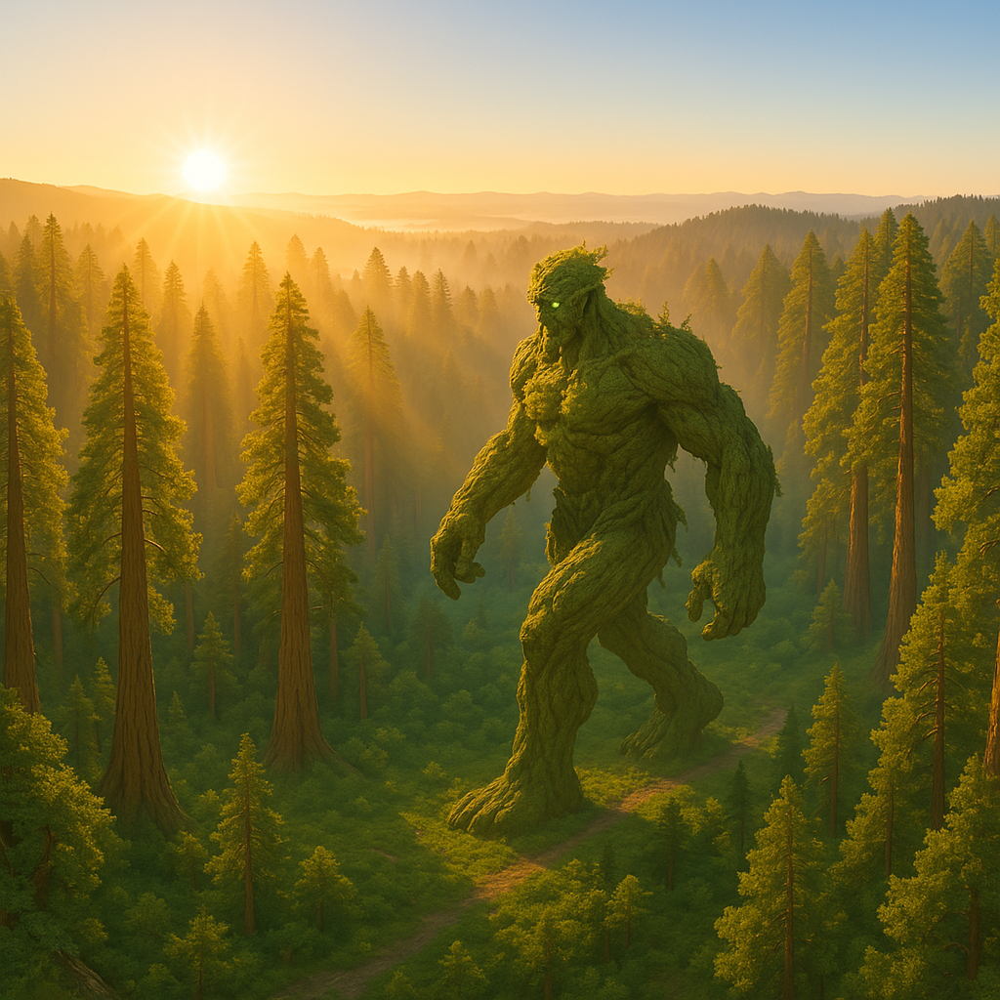
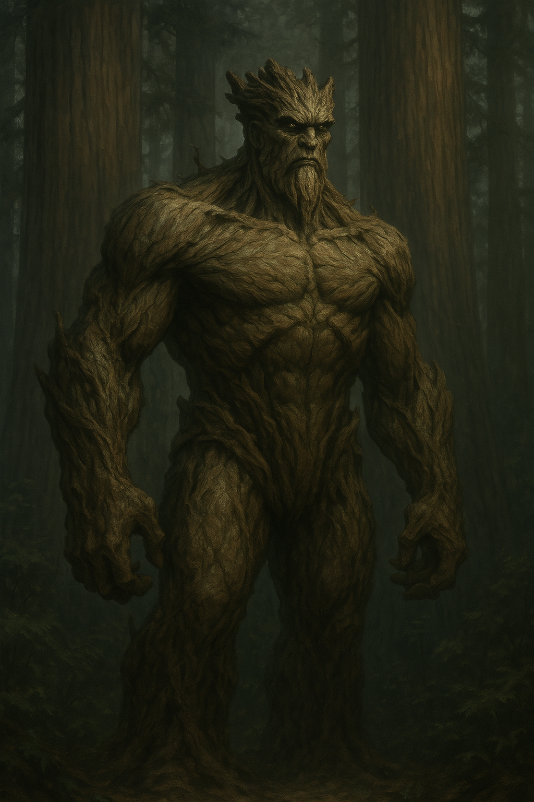

Creative Writing with AI
A short sci-fi story co-written using GPT-4.5. I came up with the story concept, guided content, dialogue, and artwork and only used gpt4.5 to help with the actual prose.
The Sequoian

Morning came early to the forest, golden fingers pushing between the trunks as if hesitant to disturb the ancient quiet. Mist drifted gently among towering sequoias whose bulk stretched skyward, massive and impossibly old, their tops lost among drifting fog and golden rays of sunlight. The sunlight filtered softly downwards, catching droplets suspended from moss-covered branches, each drop shimmering briefly before falling to damp earth with a gentle plop. The air was rich—thick with the scent of wet bark, decomposing leaves, and the faint sweetness of distant blooms.
The stillness was complete, profound, as if the forest held its breath. No birds sang yet, only the quiet drip of moisture and the distant, muted murmurs of water trickling along hidden streams. Beneath the immense trees, the forest floor was carpeted with dense, lush ferns, their fronds heavy with moisture, softly rustling with the occasional stirring of unseen creatures.
Then, into this sacred quiet, voices drifted—soft, cautious, their tones muffled yet jarringly intrusive.
"…no rangers this far… pay them off easy enough…"
"…protected by some old laws. You can't even buy this land… "
"…just old stories to scare people ... nothing out here…"
The figures appeared gradually, ghostlike through the fog—two men, boots squelching softly into mossy ground. The older one walked ahead, his movements brisk, fallen branches cracking under his feet. He bore ahead through the underbrush, dismissive of his companion’s hesitation. The other, slightly younger but more graceful trailing behind, eyes darting nervously from shadow to shadow, his body tense with unspoken anxiety.
Their murmurs rose and fell, indistinct, swallowed by the immensity around them. The snippets of conversation that broke through echoed strangely, distorted by thick trunks and swirling mist.
"... can get thousands per fang… just a few ... set for life…"
The forest listened impassively, timelessly. Far beneath the hush of dripping leaves and swaying ferns, something vast shifted—slow, deliberate, and ancient. A presence not asleep, but waiting.
Ahead, unseen by the men, hidden by a curtain of vines and decades of unchecked growth, the ruins of an old laboratory lay crumbling into decay. Concrete walls, moss-covered and cracked, crumbled quietly beneath invading roots. A gaping hole marred one side, shattered glass with the edges of the metal frame twisted outward.

The men moved cautiously through the ruined structure, their footsteps echoing hollowly off the crumbling walls. The older poacher nudged aside thick vines, squinting into the dimness. "What do you suppose happened here? An explosion? Maybe something big broke out hey?" he said, forcing a chuckle that rang false, betrayed by the unease in his eyes.
The younger man hesitated, peering nervously into shadows that seemed deeper, darker than they had any right to be. "Is no natural," he muttered softly. "Something strong do this... look the edges. No have smoke. This no explosion."
"Oh come on," the older man snapped, irritation masking his own unease. "Don't start with that superstition again. We're not here to play detective—focus on what you're here for and find me some jaguars."
They moved forward again, quickly leaving the mystery of the hole behind, their eyes now scanning the ground for tracks, minds refocused on their grim task. Neither noticed the small, weathered notebook lying neglected on a rusted steel lab desk near the door, its pages filled with faded but meticulous handwritten dates and notes.
The Sequoia Continuity Trust - Botanical Genetics Division, Redwood Sector Facility
1983-04-24 08:00
Today I walked beneath trees that will be older than nations. I can’t quite believe I’m here. After years of postdoc research and grant begging, I’m finally doing work that matters. The Trust has brought together brilliant minds, all committed to a singular, noble goal: let the trees grow. Let them outlast us. The founder—Elias Caul—spoke today during orientation. His voice trembles a little when he talks, but gods, the fire in his eyes… He doesn’t want to change the world. He just wants to build something that will outlast it.
1983-05-01 10:40
Caul’s vision is radical. The Trust isn’t a government, not a corporation. It’s meant to outlive both. The legal team is crafting documents designed to survive coups, collapses, climate shifts. Even the land deeds are encrypted, obscurely held in dozens of jurisdictions. Caul keeps saying, “Trees are slow. We must be slower.” The media loves that soundbite. It doesn't really matter that it doesn't make sense.
1983-07-09 09:15
Our genetic work is progressing. We’ve developed redwood strains that resist fire, grow faster without sacrificing strength, and seem immune to known fungi. It’s exhilarating. The Trust lets us do work that would be held up for years by ethics committees anywhere else.
Some of the investors have begun pushing for broader biodiversity goals. There’s talk of reintroducing apex predators—species that once roamed this continent long ago. Jaguars, even. They want to study trophic cascade effects in a "closed ecological sanctuary." Caul tolerates it for the funding, but I can tell his focus remains squarely on the trees. Still, a place this remote, this untouchable—it’s a tempting canvas for more than just forest restoration.
1983-09-12 16:30
There’s a new project—Project Heartwood. It’s hush-hush, invite-only. Caul pulled me into it after reading my notes on lignin-hormonal pathways in vertical growth. Apparently, someone’s been experimenting with gene splicing using human DNA markers—mostly hypothetical stuff.
1984-01-28 14:05
Overheard Caul arguing with the Heartwood project director in his office today. His voice was quieter than usual—measured, restrained—but there was force behind every word. Between sentences, he paused more than once to catch his breath, and I heard a dry cough through the glass. The director’s voice rose, sharp with frustration: “...not ethical, even by our standards!” Chairs scraped. A door slammed.
When Caul finally stepped out, he leaned against the doorframe for a moment before straightening, as if the conversation had physically drained him. He waved off help. The director resigned after lunch.
1984-02-19 21:40
Caul has volunteered himself. He’s dying—no one knew. Late-stage idiopathic pulmonary fibrosis. The disease causes scarring in his lungs and is spreading, slowly turning living tissue into something stiff, fibrous, and airless. A kind of slow internal petrification. He described it once—half-serious, half-poetic—as becoming heartwood from the inside out. This… this is his answer. His legacy. "Why not plant myself into the thing I want to protect?" he had said to me once shortly after I joined. I had been commenting on how much time he spent working and thought at the time he was just talking about his commitment to the project. I thought it was just a metaphor. It wasn’t.
1984-04-14 07:20
The transformation began last week. It’s horrifying and awe-inspiring. His body is… changing. Bark forming along his arms. His voice resonates strangely now. He doesn’t sleep. He speaks less. Watches more. We can’t keep up with mapping the cellular changes.
1984-06-27 03:12
Containment protocols failed. It wasn’t violent—he just left. Tore through reinforced walls like they were damp paper. No alarms. No threats. Just… walked out.
He looked back once. I saw his eyes. Green. Not just the iris. The sclera. Glowing faintly in the dark.
A faint rustling came through the underbrush.
The jaguar appeared—limping, head low, ribs rising and falling in ragged rhythm. She stepped carefully, warily. Her ears flicked at every sound.
She was nearly on top of the trap when the ground shuddered.
A massive shape moved between the trees.
Bark creaked. Leaves whispered. A silhouette emerged from shadow and mist—towering, knotted with living wood, moss clinging to limbs as thick as trunks. One massive hand extended, fingers spread wide, palm toward the jaguar.
The jaguar froze.
The trap snapped shut—on empty air.
The older man shouted from somewhere nearby. Branches cracked. Another trap sprung.
The massive shape stepped out of the shadows.
With a single motion, he crushed the trap beneath his foot. Metal groaned and folded like paper. Vines slid from his back, winding through the trees, snapping triggers, dragging the others into the earth.
The younger man stumbled back, eyes wide.
Glowing green eyes turned to him.
“Remember,” he said, voice like groaning wood. A pause.
“Protect.”
A deep breath.
"Tell others. Remember."
Then he vanished back into the trees.
The younger man sat in the quiet grove for a long time before he stood again.
